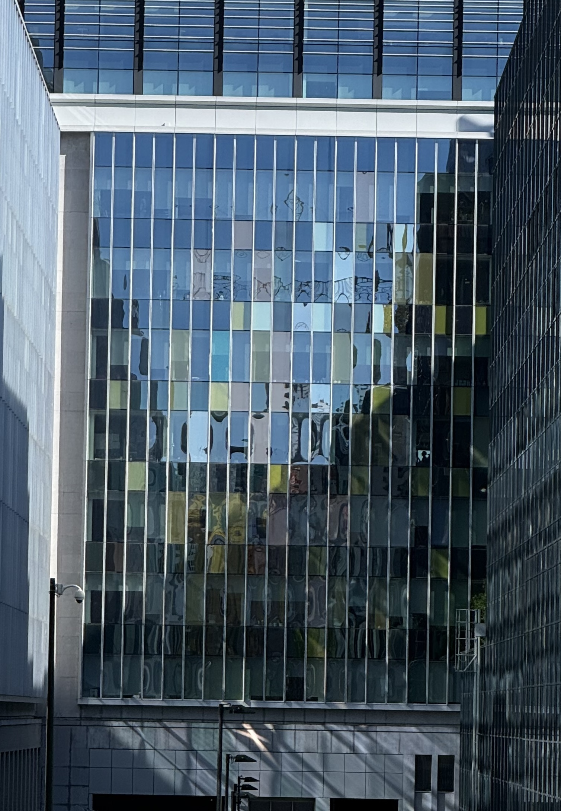

Rue de Rivoli 42, 1000 Bruxelles
Sapeurs-Pompiers Bruxelles - PASI Cité
Façade sud
Logic Pro X - Sampler
African Voices
Eastern solo
Gamme dodécaphonique
20 mesures, 4/4
60 bpm
50°51’03.8’’N 4°21’49.5’’E